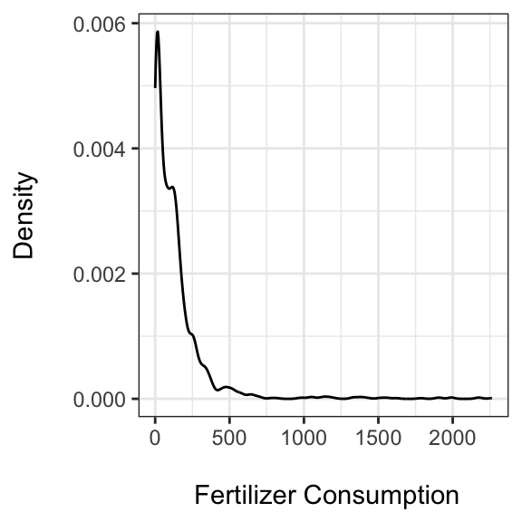

Chapter 7 Preparing Data for Analysis
Once we have gathered the raw data that we want to include in our statistical analyses, we generally need to clean it up so that it can be merged into a single data set that we can easily use for statistical analysis. In this chapter we will learn how to create the data gathering and merging files we saw in the last chapter. This includes recoding and transforming variables in the data set so that the data sets can be easily merged. This will also be useful information in later chapters as well. If you are very familiar with data transformations in R, you may want to skip to the next chapter.
7.1 Cleaning Data for Merging
In order to successfully merge two or more data frames, we need to make sure that they are in the same format. Let’s look at some of the important formatting issues and how to reformat your data frames so that they can be easily merged.
7.1.1 Get a handle on your data
Before doing anything to your data, it is a good idea to ‘look at it’ to see what needs to be done. Taking a little time to become acquainted with your data will help you avoid many error messages and much frustration.
You could type a data frame object’s name into the R console. This will
print the entire data frame in your console. For data frames with more
than a few variables and observations, this is impractical. We have
already seen a number of functions that are useful for looking at parts
of your data. As we saw in Chapter 3, the names() function shows you the
variable names in a data frame object. The head() function shows the
names plus the first few observations in a data frame. tail() shows
the last few. str() returns a summary of a data frame, including the number of observations and variables as well as the variable types.
Use the dim() (dimensions) function to quickly see the number of
observations and variables (the number of rows and columns) in a data
frame object. For example, let’s test out dim() with the fert_cons_data object we
created in Chapter 6:
## [1] 1862 5The first number is the number of rows in the data frame (1862), and the
second is the number of columns (5). You can also use the nrow() function
to find just the number of rows and ncol() to see only the columns.
The summary() function is especially helpful for seeing basic descriptive
statistics for all of the variables in a data frame and also the
variable types. Here is an example:
## country iso2c
## Length:1862 Length:1862
## Class :character Class :character
## Mode :character Mode :character
##
##
##
##
## iso3c year AG.CON.FERT.ZS
## Length:1862 Min. :2010 Min. : 0.0
## Class :character 1st Qu.:2011 1st Qu.: 18.6
## Mode :character Median :2013 Median : 86.2
## Mean :2013 Mean : 139.1
## 3rd Qu.:2015 3rd Qu.: 164.2
## Max. :2016 Max. :2263.4
## NA's :188We can immediately see that the variables iso2c and country are
character strings. Because summary() is able to calculate means,
medians, and so on for AG.CON.FERT.ZS and year, we know they are
numeric. Have a look over the summary to see if there is anything
unexpected like lots of missing values (NA’s) or unusual maximum and minimum values. You can of course, run summary() on a particular
variable by using the component selector ($):
# Summarize fertilizer consumption variable from fert_cons_data
summary(fert_cons_data$AG.CON.FERT.ZS)## Min. 1st Qu. Median Mean 3rd Qu. Max.
## 0.0 18.6 86.2 139.1 164.2 2263.4
## NA's
## 188We’ll come back to why knowing this type of information is important for merging and data analysis later in this chapter.
Another important function for quickly summarizing a data frame is table(). This creates a contingency table with counts of the number of observations per combination of factor variables.
You can view a portion of a data frame object with View() This will open a new window that lets you see a selection of the data frame. If you are using RStudio, you can click on the data frame in the Environment tab and you will get something similar. Note that neither of these viewers are interactive in that you can’t use them to manipulate the data. They are only data viewers. To be able to see similar windows that you can interactively edit, use the fix() function in the same way that you use View(). This can be useful for small edits, but remember that the edits are not reproducible.
Tibbles
Most of these data summary capabilities come “for free” when you use an alternate type of data frame called a “tibble” (Müller and Wickham 2023) For example:
# Create example tibble data frame
tbl_ex <- tibble::tibble(numbers = 1:26, letters = letters)
tbl_ex## # A tibble: 26 × 2
## numbers letters
## <int> <chr>
## 1 1 a
## 2 2 b
## 3 3 c
## 4 4 d
## 5 5 e
## 6 6 f
## 7 7 g
## 8 8 h
## 9 9 i
## 10 10 j
## # ℹ 16 more rowsEntering a tibble’s object name in the console returns the condensed output, the data dimmensions, and the variable types with the first 10 entries.
Tibbles are the data structure favored by the tidy data/tidyverse R data paradigm (Wickham 2014b). We will work with other packages of the Tidyverse, e.g. dplyr and ggplot2, in later chapters. Note that these packages often work with traditional data frames as well (or will convert data frames to tibbles automatically).
7.1.2 Reshaping data
It is often a good idea if your data sets are kept in data frame type objects if that is the format you will use for analysis. See Chapter 3 for how to convert objects into data frames with the data.frame() function. Not only do data sets (generally) need to be stored in data frame objects, they also need to have the same layout before they can be merged. Most R statistical analysis tools assume that your data is in “long” format. For an excellent discussion of ideal data formats for statistical analysis, see Wickham (2014b). Long formatted data usually has columns that represent variables. Rows contain specific observations. For example:
In this chapter we will mostly use examples of time-series cross-sectional data (TSCS) that we want to have in long-format. Long-formatted TSCS data is a data frame where rows identify observations of a particular subject at particular points in time and there are multiple observations per subject (see Table ??). In this chapter our TSCS data is specifically going to be countries that are observed in multiple years.
If one of our raw data sets is not in this format, then we will need to reshape or, using Wickham’s (2014b) terminology, “tidy” it. Some data sets are in “wide” format, where one of the columns in what would be long formatted data is “widened” to cover multiple columns. This is confusing to imagine without an example. Table ?? shows how Table ?? looks when we widen the time variable.
The process of tidying data often causes confusion and frustration. Though probably never easy, there are a number of useful R functions for changing data from wide-format to long and vice versa. These include the matrix transpose function (t())140 and the reshape() function, both are loaded in R by default. tidyr (Wickham, Vaughan, and Girlich 2023) is a very helpful package for reshaping data. This package has more general tools for reshaping data and is worth investing some time to learn well. In this section, we will look at tidyr’s pivot_longer() function and use it to reshape a TSCS data frame from wide- to long-format. We will also encounter this function again in Chapter 10 when we want to transform data so that it can be graphed. Note that if you want to go from long to wide-format, use tidyr’s pivot_wider() function.
For illustration, let’s imagine that the fertilizer consumption data we previously downloaded from the World Bank is in wide, rather than long, format and is in a data frame object called fert_wide. It looks like this:
## # A tibble: 266 × 4
## country iso2c iso3c `2016`
## <chr> <chr> <chr> <dbl>
## 1 Afghanistan AF AFG 13.7
## 2 Africa Eastern and Southern ZH AFE 21.1
## 3 Africa Western and Central ZI AFW 11.7
## 4 Albania AL ALB 126.
## 5 Algeria DZ DZA 21.0
## 6 American Samoa AS ASM 34.2
## 7 Andorra AD AND NA
## 8 Angola AO AGO 6.64
## 9 Antigua and Barbuda AG ATG 18.2
## 10 Arab World 1A ARB 51.7
## # ℹ 256 more rowsSee the chapter’s Appendix for the full code I used to reshape the data from long- to wide-format.
Let’s think about how we want to tidy the data. We want to create two new columns from the many columns that are now labeled by year. Let’s call the new columns Year and Fert. The Year column will clearly contain the year of each observation and Fert will contain the fertilizer consumption. Year will be what pivot_longer() calls the variable’s “name” and Fert is the “value”. In our fert_wide data, we don’t want the iso2c and country variables to be gathered. These variables identify the data set’s subjects. So we can tell pivot_longer() that we only want the columns with the between 2016 and 2010 to be used for the long variable. Note that the back ticks in the code below allow us to specify numeric values as column names.
# Gather fert_wide
fert_long <- tidyr::pivot_longer(fert_wide,
cols = `2016`:`2010`,
names_to = "Year",
values_to = "Fert")
fert_long## # A tibble: 1,862 × 5
## country iso2c iso3c Year Fert
## <chr> <chr> <chr> <chr> <dbl>
## 1 Afghanistan AF AFG 2016 13.7
## 2 Afghanistan AF AFG 2015 13.3
## 3 Afghanistan AF AFG 2014 10.2
## 4 Afghanistan AF AFG 2013 4.88
## 5 Afghanistan AF AFG 2012 2.38
## 6 Afghanistan AF AFG 2011 3.83
## 7 Afghanistan AF AFG 2010 1.78
## 8 Africa Eastern and Southern ZH AFE 2016 21.1
## 9 Africa Eastern and Southern ZH AFE 2015 19.2
## 10 Africa Eastern and Southern ZH AFE 2014 19.9
## # ℹ 1,852 more rows7.1.3 Renaming variables
Frequently, in the data cleaning process we want to change the names of our variables. This will make our data easier to understand and may even be necessary to properly combine data sets (see below). In the previous example, for instance, our fert_long data frame has two variables: Year and Fert. Imagine, for the sake of demonstration, that we want to rename them year and fert_cons. Renaming data frame variables is straightforward with the rename() function in the dplyr package . To rename both variable and value with the rename() function type:
## # A tibble: 1,862 × 5
## country iso2c iso3c year fert_cons
## <chr> <chr> <chr> <chr> <dbl>
## 1 Afghanistan AF AFG 2016 13.7
## 2 Afghanistan AF AFG 2015 13.3
## 3 Afghanistan AF AFG 2014 10.2
## 4 Afghanistan AF AFG 2013 4.88
## 5 Afghanistan AF AFG 2012 2.38
## 6 Afghanistan AF AFG 2011 3.83
## 7 Afghanistan AF AFG 2010 1.78
## 8 Africa Eastern and Sout… ZH AFE 2016 21.1
## 9 Africa Eastern and Sout… ZH AFE 2015 19.2
## 10 Africa Eastern and Sout… ZH AFE 2014 19.9
## # ℹ 1,852 more rows7.1.4 Ordering data
You may have noticed that as a result of gathering fert_wide the data is now ordered by country-year. Imagine that for some substantive reason that makes the data easier to read, we rather want it ordered by year-country. Though not required for merging in R, some statistical analyses assume that the data is ordered in a specific way.
We can order observations in our data set using the order() function. For example, to order fert_long by year-country, we type:
# Order fert_long by year-country
fert_long <- fert_long[order(fert_long$year,
fert_long$country), ]
head(fert_long)## # A tibble: 6 × 5
## country iso2c iso3c year fert_cons
## <chr> <chr> <chr> <chr> <dbl>
## 1 Afghanistan AF AFG 2010 1.78
## 2 Africa Eastern and South… ZH AFE 2010 20.2
## 3 Africa Western and Centr… ZI AFW 2010 9.60
## 4 Albania AL ALB 2010 85.0
## 5 Algeria DZ DZA 2010 15.8
## 6 American Samoa AS ASM 2010 67.1dplyr has a function called arrange() that can also be useful for ordering your data. arrange()’s syntax is much cleaner and easier to remember for data frames than the operation we did with order(). To arrange the fert_long data back to country-year with arrange() use:
To arrange a variable in descending order, place it in the desc() function from dplyr, e.g. arrange(fert_long, country, desc(year)).
7.1.5 Subsetting data
Sometimes you may want to use only a subset of a data frame. For example, the density plot in the following figure shows us that the fert_long data has a few very extreme values (see the chapter’s Appendix for the source code to create this figure).

We can use the subset() function to examine these outliers, for example, countries that have fertilizer consumption greater than 1000 kilograms per hectare.
## # A tibble: 27 × 5
## country iso2c iso3c year fert_cons
## <chr> <chr> <chr> <chr> <dbl>
## 1 Bahrain BH BHR 2010 1336.
## 2 Bahrain BH BHR 2012 1567.
## 3 Bahrain BH BHR 2013 1327.
## 4 Bahrain BH BHR 2014 1383.
## 5 Bahrain BH BHR 2015 1040.
## 6 Ireland IE IRL 2010 1065.
## 7 Ireland IE IRL 2012 1139.
## 8 Ireland IE IRL 2013 1110.
## 9 Ireland IE IRL 2014 1131.
## 10 Ireland IE IRL 2015 1166.
## # ℹ 17 more rowsIf we want to drop these outliers from our data set, we can use subset() again:
In this example, non-country units like “Arab World” are included. We might also want to drop these units with subset(). For example:
We can also use subset() to remove observations with missing values (NA) for fert_cons.
# Remove observations of fert_cons
# with missing values
fert_long_sub <- subset(x = fert_long_sub,
!is.na(fert_cons))
# Summarize fert_cons
summary(fert_long_sub$fert_cons)## Min. 1st Qu. Median Mean 3rd Qu. Max.
## 0.0 18.2 84.9 116.9 160.0 995.7Let’s step back. I’ve introduced a number of new logical
operators and a new function in the subsetting examples. The first
example included the greater than sign (>). The
second example included the less than or equal to operator: <=. The
third example included the not equal operator: !=. In R, exclamation
points (!) generally denote ‘not’. We used this again in the final
example in combination with the is.na function. This function indicates
if an element is missing, so !is.na means “not missing”. See Table ?? for a list of R’s logical operators.
You can use these operators and functions when subsetting data and
throughout R.
7.1.6 Recoding string/numeric variables
You may want to recode your variables. In particular, when you merge data sets you need to have identical identification values that R can use to match each observation. If in one data set observations for the Republic of Korea are referred to as “Korea, Rep.” and in another they are labeled “South Korea”, R will not know to merge them. We need to recode values in the variables that we want to match our data sets on. For example, in fert_long_sub the southern Korean country is labeled “Korea, Rep.”. To recode it to “South Korea”, type:
# Recode country == "Korea, Rep." to "South Korea"
fert_long_sub$country[fert_long_sub$country ==
"Korea, Rep."] <- "South Korea"This code assigns “South Korea” to all values of the country variable that equal “Korea, Rep.”.141 You can use a similar technique to recode numeric variables as well. The only difference is that you omit the quotation marks. We will look at how to code factor variables later.
7.1.7 Creating new variables from old
As part of your data cleanup process (or later during statistical
analysis), you may want to create new variables based on existing
variables. For example, we could create a new variable that is the
natural logarithm of fert_cons. To do this, we run the
variable through the log() function and assign a new variable that we’ll
call fert_cons_log.
## Min. 1st Qu. Median Mean 3rd Qu. Max.
## -Inf 2.90 4.44 -Inf 5.08 6.90Imagine that when we summarized the new log transformed variable that we had a minimum (and mean) value
of -Inf. This would indicate that by logging the variable we have created
observations with the value negative infinity. R calculates the natural
logarithm of zero as negative infinity.142 We probably don’t want
negative infinity values. There are a few ways to deal with this. We
could drop all observations of fert_cons with the value
zero before log transforming it. Another common solution is recoding
zeros as some small nonnegative number like 0.001. For example:
# Recode zeros in Fertilizer Consumption
fert_long_sub$fert_cons[fert_long_sub$fert_cons ==
0] <- 0.001
# Natural log transform Fertilizer Consumption
fert_long_sub$fert_cons_log <- log(fert_long_sub$fert_cons)Note that this example is included to demonstrate R syntax rather than to prescribe a certain transformation of skewed data with zeros. The choice of which transformation to make should ultimately be made based on the data, model, and context. See Hyndman (2010) for more information on various alternatives including Box-Cox (Box and Cox 1964) and inverse hyperbolic sine transformations (Burbidge and Robb 1988).
Creating factor variables
We can create factor variables from numeric or string variables. For example, we may want to turn the continuous numeric fert_cons variable into an ordered categorical (i.e. factor) variable. Imagine that we want to create a factor variable called fert_cons_group with four levels called ‘low’, ‘medium low’, ‘medium high’, and ‘high’. To do this, let’s first create a new numeric variable based on the values listed in Table ??. Now let’s use a procedure that is similar to the variable recoding we did earlier:143
# Create numeric factor levels variable
# Attach fert_long_sub data frame
attach(fert_long_sub)
# Created new fert_cons_group variable based on # fert_cons
fert_long_sub$fert_cons_group[fert_cons < 18] <- 1
fert_long_sub$fert_cons_group[fert_cons >= 18 &
fert_cons < 81] <- 2
fert_long_sub$fert_cons_group[fert_cons >= 81 &
fert_cons < 158] <- 3
fert_long_sub$fert_cons_group[fert_cons >= 158] <- 4
fert_long_sub$fert_cons_group[is.na(fert_cons)] <- NA
# Detach data frame
detach(fert_long_sub)
summary(fert_long_sub$fert_cons_group)## Min. 1st Qu. Median Mean 3rd Qu. Max.
## 1.00 2.00 3.00 2.52 4.00 4.00You’ll notice that we don’t have a factor variable yet; our new variable
is numeric. We can use the factor() function to convert fert_cons_group
into a factor variable with the labels we want.
# Create vector of factor level labels
fc_labels <- c("low", "medium low", "medium high", "high")
# Convert fert_cons_group to a factor
fert_long_sub$fert_cons_group <-
factor(fert_long_sub$fert_cons_group,
labels = fc_labels)
summary(fert_long_sub$fert_cons_group)## low medium low medium high high
## 408 389 428 415We first created a character vector with the factor-level labels and
then applied using factor’s labels argument. Using summary() with a
factor variable gives us its level labels as well as the number of
observations per level.
The cut() function provides a less code-intensive way of creating
factors from numeric ones and labeling factor levels. For example:
# Create a factor variable with the cut function
fert_factor <- cut(fert_long_sub$fert_cons,
breaks = c(-0.01, 17.99, 80.99,
157.99, 999.99),
labels = fc_labels)
summary(fert_factor)## low medium low medium high high
## 408 389 427 416The labels argument lets us specify the factor levels’ names. The
breaks argument lets us specify what values separate the factor
levels. Note that we set the first break as -0.01, not because any
country had negative fertilizer consumption, but because the intervals
created by break() exclude the left value and include the right
value.144 If we had used 0, then all of the observations where a
country used effectively no fertilizer would be excluded from the “low”
category.
7.1.8 Changing variable types
Sometimes a variable will have the wrong type. For example, a numeric
variable may be incorrectly made a character string when a data set is
imported from Excel. You can change variable types with a number of
functions. We already saw how to convert a numeric variable to a factor
variable with the factor() function. Unsurprisingly, to convert a
variable to a character, use character() and numeric() to convert it to a numeric type variable. We can place as. before these functions (e.g.
as.factor()) as a way of coercing a change in type.
Warning: Though these functions have straightforward names, a word of
caution is necessary. Always try to understand why a variable is not of
the type you would expect. Often variables have unexpected types
because they are coded (or miscoded) in a way that you didn’t
anticipate. Changing the variable types, especially when using as.,
can introduce new errors. Make sure that the conversion made the changes
you expected.
7.2 Merging Data Sets
In the previous section, we learned crucial skills for cleaning up data
sets. When your data sets are (a) in the same format and (b) have
variables with identically matching ID values, you can merge your data
sets. In this section, we’ll look at two different ways to merge
data sets: binding and the merge() function. We’ll also look at ways to address a common issue when merging data: duplicated observations and
columns.
7.2.1 Binding
As we saw in Chapter 3, if your data sets are in the same
order—rows in all of the data sets represent the same observation of
the same subject—then you can use the cbind() function to bind
columns from the data sets together. This situation is unusual when
merging real-world data. If your data sets are not in exactly the same
order you will create a data set with nonsensical rows that combine data
from multiple observations. Therefore, you should avoid using cbind()
for merging most real-world data.
If you have data sets with the exact same columns and variable types and
you just want to attach one under the other, you can use the rbind()
function. It binds the rows in one object to the rows in another.145 It
has the same syntax as cbind(). Again, you should be
cautious when using this function, though it is more difficult to
accidentally create a nonsensical data set with rbind(). R will give you
an error if it cannot match your objects’ columns.
7.2.2 Merging data frames
Generally, the merge() function is the safest and most effective way to merge two data sets. Imagine that we want to merge our
fert_long_sub data frame with two other data frames we created in
Chapter 6: fin_regulator and disprop_data. The
simplest way to do this is to use the merge function twice, i.e.:
# Merge fin_regulator and disprop_data
merged_data_1 <- merge(x = fin_regulator, y = disprop_data,
by = "iso2c", all = TRUE)
# Merge combined data set with and fert_long_sub
merged_data_1 <- merge(x = merged_data_1, y = fert_long_sub,
by = "iso2c", all = TRUE)
names(merged_data_1)## [1] "iso2c" "idn"
## [3] "country.x" "year.x"
## [5] "reg_4state" "country.y"
## [7] "year.y" "disproportionality"
## [9] "country" "iso3c"
## [11] "year" "fert_cons"
## [13] "fert_cons_log" "fert_cons_group"Let’s go through this code. The x and y arguments specify
which data frames we want to merge. The by argument specifies what
variable(s) in the two frames identify the observations so that we can
match them. In this example, we are merging by countries’ ISO country
two-letter codes.146 We set the argument all = TRUE so that we keep
all of the observations from both of the data frames. If the argument is
set to FALSE, only observations that are common to both data frames
will be included in the merged data frame. The others will not be
included.
You might have noticed that this isn’t actually the merge that we want
to accomplish with these data frames. Remember that observations are not
identified in this time-series cross-section data by one country
name or other country code variable. Instead, they are identified by both
country and year variables. To merge data frames based on the overlap of
two variables (e.g. match Afghanistan-2010 in one data frame with
Afghanistan-2010 in the other), we need to add the union() function to merge’s by argument. Here is a full example:
# Merge fin_regulator and disprop_data
merged_data_2 <- merge(fin_regulator, disprop_data,
union("iso2c", "year"),
all = TRUE)
# Merge combined data frame with fert_long_sub
merged_data_2 <- merge(merged_data_2, fert_long_sub,
union("iso2c", "year"),
all = TRUE)
names(merged_data_2)## [1] "iso2c" "year"
## [3] "idn" "country.x"
## [5] "reg_4state" "country.y"
## [7] "disproportionality" "country"
## [9] "iso3c" "fert_cons"
## [11] "fert_cons_log" "fert_cons_group"After merging data frames, it is always a good idea to look at the result and make sure it is what you expected. Some post-merging cleanup may be required to get the data frame ready for statistical analysis.
Bigger data
Before discussing post-merge cleanup, it is important to highlight ways
to handle large data sets. The merge() function and many of the other
data frame manipulation functions covered so far in this chapter may not
perform well with very large data sets. If you are using very large data
sets, it might be worth investing time learning how to use packages like
dbplyr (Wickham, Girlich, and Ruiz 2023) and data.table packages (Dowle and Srinivasan 2023). They have many
capabilities for working efficiently with large data sets. Likely, if you have very large data, you will need to learn SQL (Structured Query Language) or another special purpose data handling
language.147 Once you know how these languages work, you can
incorporate them into your R workflow with R packages like dbplyr.
Duplicate values
Duplicate observations are one thing to look out for after (and before)
merging. You can use the duplicated() function to check for duplicates.
Use the function in conjunction with subscripts to remove duplicate
observations. For example, let’s create a new object called
data_duplicates from the iso2c-years that are duplicated in
merged_data_2. Remember that iso2c and year are in the first and
second columns of the data frame.
# Created a data frame of duplicated country-years
data_duplicates <- merged_data_2[
duplicated(merged_data_2[, 1:2]), ]
# Show the number of rows in data_duplicates
nrow(data_duplicates)## [1] 6In this data frame, there are duplicated iso2c-year observations. We know
this because nrow tells us that the data frame with the duplicated
values has rows, i.e. observations.
To create a data set without duplicated observations (if there are
duplicates), add an exclamation point (!) before
duplicated, i.e. not duplicated, in the above code.
# Created a data frame of unique country-years
data_not_duplicates <- merged_data_2[
!duplicated(merged_data_2[, 1:2]), ]Note that if you do have duplicated values in your data set and you run
a similar procedure on it, it will drop duplicated values that have a
lower order in the data frame. To keep the lowest ordered value and drop
duplicates higher in the data set, use duplicated’s fromLast
argument like this: fromLast = TRUE.
Warning: Look over your data set and the source code that created the data set to try to understand why duplicates occurred. There may be a fundamental problem in the way you are handling your data that resulted in the duplicated observations.
7.2.3 Duplicate columns
Another common post-merge cleanup issue is duplicate columns, i.e.
variables. These are variables from the two data frames with the same
name that were not included in merge’s by argument. For example, in
our previous merged data examples, there are three country name
variables: country.x, country.y, and country to signify
which data frame they are from.148
You should decide what to do with these variables on a
case-by-case basis. But if you decide to drop one of the variables and
rename the other, you can use subscripts (as we saw in Chapter 3). The dplyr package has a
useful function called select() that can also remove variables from data frames. To remove variables, write a minus sign (-) and then the
variable name without quotes. For example, imagine that we want to keep
country.x and drop the other variables.149 Let’s also remove the
idn variable:
# Remove country.y, country, X, and idn
final_cleaned <- dplyr::select(data_not_duplicates, -country.y,
-country, -idn)
# Rename country.x = country
final_cleaned <- dplyr::rename(final_cleaned,
country = country.x)## [1] "iso2c" "year"
## [3] "country" "reg_4state"
## [5] "disproportionality" "iso3c"
## [7] "fert_cons" "fert_cons_log"
## [9] "fert_cons_group"Alternatively, you can select specific variables to keep with the
select function by writing the variables’ names without a minus sign.
Note: If you are merging many data sets, it can sometimes be good to
clean up duplicate columns between each merge() call.
Chapter summary
This chapter has provided you with many tools for cleaning up your data to get it ready for statistical analysis. Before moving on to the next chapter to learn how to incorporate statistical analysis as part of a reproducible workflow with knitr/R Markdown, it’s important to reiterate that the function we’ve covered in this chapter should usually be embedded in the types of data creation files we saw in Chapter 6. These files can then be tied together with a makefile into a process that should be able to relatively easily take very raw data and clean it up for use in your analyses. Embedding these functions in data creation source code files, rather than just typing the functions into your R console or manually changing data in Excel, will make your research much more reproducible. It will also make it easier to backtrack and find mistakes that you may have made while transforming the data. Including new or updated data when it becomes available will also be much easier if you use a series of segmented data creation source code files that are tied together with a makefile.
References
See this example by Rob Kabacoff: http://www.statmethods.net/management/reshape.html. Note also that because the matrix transpose function is denoted with
t, you should not give any object the name t.↩︎The countrycode package (Arel-Bundock 2024) is very helpful for creating standardized country identification variables.↩︎
R denotes positive infinity with
Inf.↩︎In this code, I attached the data frame fert_long_sub so that it is easier to read.↩︎
In mathematical notation, the “low” level includes all values in the interval \((-0.01,\:17.99]\).↩︎
Some programming languages and statistical programs refer to this type of action as “appending” one data set to another.↩︎
Please see this chapter’s Appendix for details on how I created an ISO country two-letter code variable in the fin_regulator data frame.↩︎
w3schools has an online SQL tutorial at: http://www.w3schools.com/sql/default.asp.↩︎
The former two were created in the first merge between fin_regulator and disprop_data. When the second merge was completed, there were no variables named country in the MergeData2 data frame, so country did not need to be renamed in the new merged data set.↩︎
This version of the country variable is the most complete.↩︎